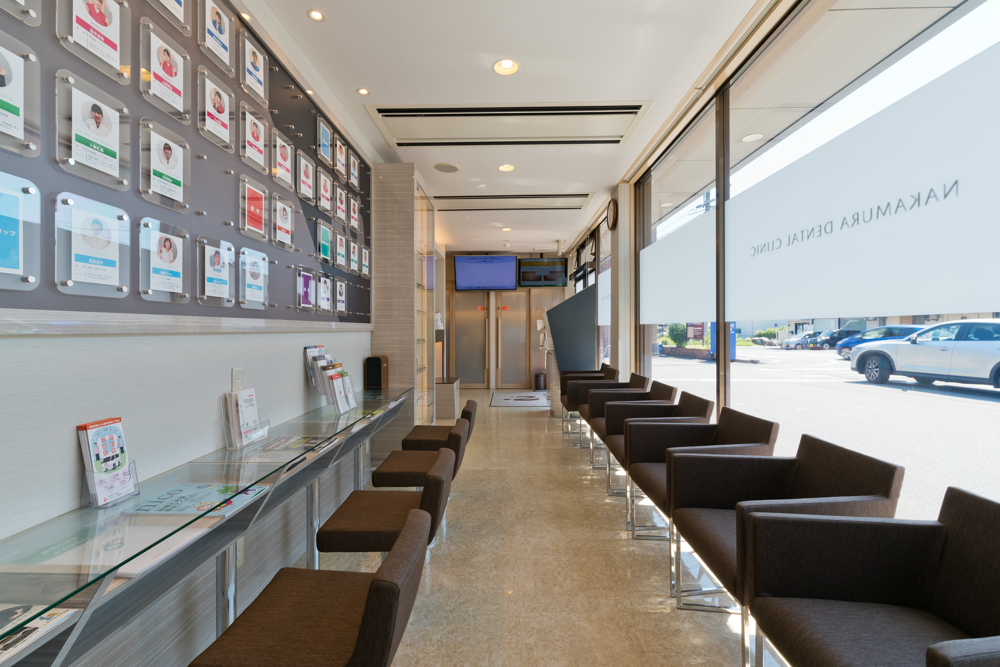
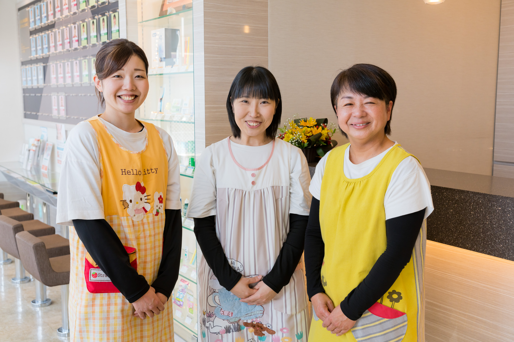

むし歯治療
なるべく削らない・痛みを抑えた治療
| 診療時間 | 月 | 火 | 水 | 木 | 金 | 土 | 日祝 |
|---|---|---|---|---|---|---|---|
| 8:30〜17:30 | ★ | ★ | ★ | ★ | ★ | ● | 休 |
診療のご予約・お問合せはお気軽に

広島県福山市。
妊娠中の方からご高齢の方まで、家族みんなが安心して通える「生涯のかかりつけ医」として、あなたの人生に寄り添います。
私たちは、単に「痛いところを削って詰める」だけの治療は行いません。
お口の健康は、全身の健康、そして毎日の食事や会話という
「人生の質（QOL）」に直結しています。
だからこそ、対症療法ではなく原因を根本から見つめ直す
予防歯科をベースに、
患者様一人ひとりとのコミュニケーションを最も大切にしています。
不安な気持ちに寄り添い、生涯にわたってご自身の歯で笑顔あふれる毎日を過ごしていただけるよう、
スタッフ一丸となってサポートいたします。

プライバシーに配慮した個室空間で、周囲を気にせずお悩みやご要望をじっくりお伺いします。

世界基準（クラスB）の滅菌器を導入。使用する器具は患者様ごとに滅菌パックし院内感染を防ぎます。

入口から診療室まで段差のない設計です。車椅子やベビーカーのままスムーズに診療台まで移動可能です。

保育士資格を持つスタッフが在籍。小さなお子様連れの方も安心して治療に専念していただけます。

“HAPPY LIFE” のお手伝い
 なかむら歯科クリニック
なかむら歯科クリニック
院長・理事長 中村幸生
| 住所 |
〒721-0942 広島県福山市引野町 3丁目 37-27 駐車場61台完備 |
|---|---|
| 交通 |
電車⇒東福山駅南口から直進 つきあたり 800m 車⇒国道2号線東福山駅交差点を南に 500m |
一度受診された方はお電話にてご予約ください。
| 診療時間 | 月 | 火 | 水 | 木 | 金 | 土 | 日祝 |
|---|---|---|---|---|---|---|---|
| 8:30〜17:30 | ★ | ★ | ★ | ★ | ★ | ● | × |
最終受付：17:00 休診日：日曜・祝日
★印は託児サービス有（10時〜13時まで）